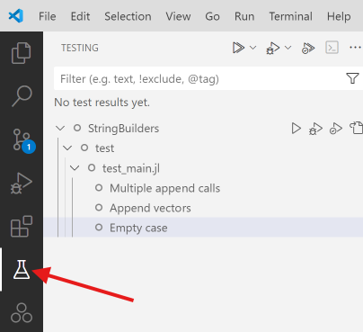
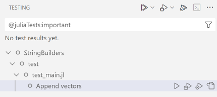
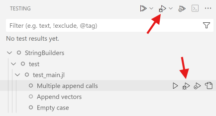
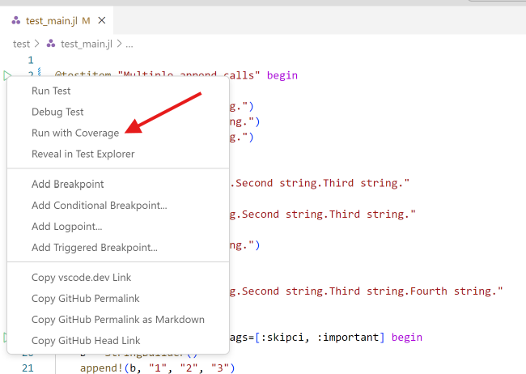
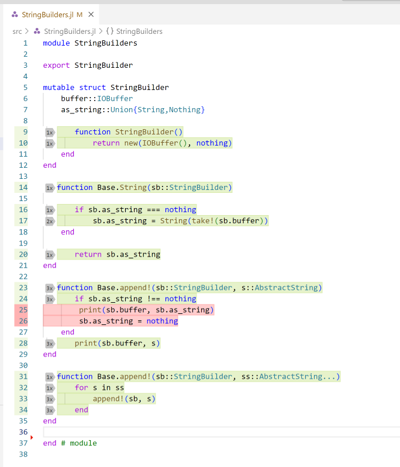

测试项框架
测试项框架(test item framework)是一组软件包和用户界面功能，使编写和运行 Julia 软件包的测试变得简单。
该框架的主要好处在于，测试代码可以结构化为测试项，从而可以单独轻松运行这些测试项。
Julia VS Code 扩展对测试项框架提供了广泛支持，但测试项框架本身可以完全独立于 VS Code 使用。用户可以编写测试项并通过命令行界面（或标准的 Pkg.test 功能）运行它们，而无需使用 VS Code。
编写测试项
测试项框架的核心功能是可以将测试结构化为 @testitem 块，然后单独运行这些测试，而无需一次性运行所有测试。一个典型的 @testitem 可能如下所示：
@testitem "First tests" begin
x = foo("bar")
@test length(x)==3
@test x == "bar"
end一个 @testitem 总是有一个名称（此处为 "First tests"），然后是一个 begin ... end 块中的代码。@testitem 内部的代码必须能够独立执行，即不能依赖于 @testitem 外部的代码，除非该代码以某种方式被显式导入或包含在 @testitem 内部。有一个例外：@testitem 内的代码将在一个临时模块内运行，其中已经执行了 using Test 和 using MYPACKAGENAME，因此可以直接使用从 Test 模块或正在开发的软件包中导出的任何内容。在上面的例子中，这适用于 foo 函数（假设在被测试的软件包中定义）和 @test 宏。
@testitem 可以在包中的任何地方出现。它们不必位于 test 文件夹中，也不必在 test/runtests.jl 包含的文件中。事实上，@testitem 甚至可以位于常规包代码内部，例如与正在测试的代码相邻。在这种情况下，您只需依赖于 TestItems.jl 包，以便访问 @testitem 宏。如果您有一个名为 MyPackage 的包，则文件 src/MyPackage.jl 可以如下所示：
module MyPackage
using TestItems
export foo
foo(x) = x
@testitem "First tests" begin
x = foo("bar")
@test length(x)==3
@test x == "bar"
end
end如果您不喜欢这种内联的 @testitem 风格，也可以将 @testitem 块放入测试文件夹中的 Julia 文件中。
在 VS Code 中运行测试项
当您在 VS Code 中打开一个 Julia 包并安装了 Julia 扩展 时，它会不断（每次按键后！）查找您 Julia 文件中的所有 @testitem。如果找到任何 @testitem，它们将出现在用户界面的各个位置。
您可以在 VS Code 的测试活动栏中找到所有检测到的 @testitem：

测试活动区域提供了运行单个 @testitem、查看结果等的选项。
S Code 还会在文本编辑器中每个检测到的 @testitem 旁边放置一个小的运行按钮：

除了所有这些允许您运行测试的 UI 元素之外，还有用于显示测试结果的 UI。例如，当您运行测试并且其中一些测试失败时，扩展将收集所有这些测试失败信息，并在代码中直接显示特定测试失败的位置：

特别是在运行大量测试且测试文件较大时，这使得找到具体失败测试变得更加容易，不再需要在 REPL 中寻找文件和行信息！
从命令行运行测试
您可以使用 TestItemRunner.jl 包作为传统 Pkg.test 工作流的一部分来运行 @testitem。
要为使用 @testitem 的包启用与 Pkg.test 的集成，您只需做两件事：
- 将 TestItemRunner.jl 作为测试依赖项添加到您的包中
- 在包的
test/runtests.jl文件中放入以下代码：
using TestItemRunner
@run_package_tests标签
现在您可以为 @testitem 添加标签。标签可以在 VS Code UI 和通过 TestItemRunner.jl 中使用，以过滤您想要运行的测试项。
添加标签的语法如下：
@testitem "My testitem" tags=[:skipci, :important] begin
x = foo("bar")
@test length(x)==3
@test x == "bar"
end然后，您可以使用这些相同的标签在 VS Code UI 中过滤测试列表：

您还可以在 test/runtests.jl 中使用标签，以过滤将通过传统 Pkg.test 入口点运行的测试列表：
using TestItemRunner
@run_package_tests filter=ti->!(:skipci in ti.tags)下面的 [[#TestItemRunner.jl 中的过滤支持]] 部分对 @run_package_tests 宏的新过滤关键字进行了更完整的描述。
在 VS Code 中并行执行测试
VS Code 扩展有一个设置，控制您想要使用多少 Julia 进程进行并行测试执行：

默认值为 1，因此您需要更改此值以使用并行测试执行功能。值为 0 将使用与您的处理器数量相同的测试进程。
一旦您配置了多个测试进程，单个 @testitem 将并行运行。
这里有一个权衡：更多的测试进程意味着需要更多内存，并且可能还会有额外的开销来启动所有进程并准备好实际运行 @testitem。
管理测试进程
通过 VS Code 中的新测试 UI 启动的测试进程不会自动终止，即它们会保持在内存中并占用其他资源。当然，这样做有很多好处，即 @testitem 可以在测试进程启动并运行后非常快速地执行，但在某些情况下，人们可能仍希望简单地终止所有当前正在运行的测试进程。
为了实现这一点，所有测试进程会在 Julia 工作区中显示，旁边还有任何可能正在运行的 REPL 或 Notebook 进程。您可以通过点击 Stop Test Process 按钮来终止 Julia 测试进程。在这个截图中，有四个测试进程正在运行：
TestItemRunner.jl 中的过滤支持
您可以将通用过滤函数传递给 @run_package_tests 宏，以选择要执行的 @testitem。上面的部分使用标签来选择要运行的测试，但您还可以根据 @testitem 定义的文件名或 @testitem 的名称进行过滤。
工作原理是，您可以将过滤函数传递给 @run_package_tests 宏。该过滤函数会针对项目中检测到的每个 @testitem 被调用一次，函数必须返回 true（如果该测试项应运行）或 false（如果不应运行）。@run_package_tests 将传递一个包含三个字段的命名元组给您的过滤函数，这些字段包含有关特定测试项的元信息，分别是字段 filename（定义 @testitem 的文件完整路径）、name（您定义的 @testitem 名称）和 tags（一个 Symbol 的向量）。通过这些信息，您可以编写任意复杂的过滤条件。例如，这里我过滤掉任何具有 :skipci 标签的 @testitem，并且我只运行在特定文件中定义的测试：
@run_package_tests filter=ti->( !(:skipci in ti.tags) && endswith(ti.filename, "test_foo.jl") )默认导入选项
当您编写 @testitem 时，默认情况下，正在测试的软件包和 Test 包通过一个隐式的 using 语句导入。在某些情况下，这可能不是您希望的，因此可以通过 default_imports 选项在每个 @testitem 级别上控制此行为，该选项接受一个 Bool 值。要禁用这些默认导入，您可以这样写：
@testitem "Another test for foo" default_imports=false begin
using MyPackage, Test
x = foo("bar")
@test x != "bar"
end注意，我们现在需要手动在 @testitem 中添加行 using MyPackage, Test，以便访问 foo 函数和 @test 宏。
在 @testitem 之间共享代码
默认情况下，@testitem 之间不共享任何代码，且彼此之间没有依赖关系。这些特性使得独立运行 @testitem 成为可能，但有时需要在多个 @testitem 之间共享公共代码。测试项框架提供了两个宏来实现这一目的：@testsnippet 和 @testmodule。这两个宏可以出现在包中的任何 .jl 文件中。
测试片段
@testsnippet 是一个代码块，单个 @testitem 可以在其自己的代码运行之前执行该代码块。如果某个 @testitem 依赖于特定的 @testsnippet，那么该片段将在每次运行 @testitem 时执行。
@testsnippet 的定义可能如下所示：
@testsnippet MySnippet begin
foo = "Hello world"
end@testitem 可以通过使用 setup 关键字来利用这个片段，如下所示：
@testitem "My test item" setup=[MySnippet] begin
@test foo == "Hello world"
end测试模块
@testmodule 定义了一个可以从 @testitem 访问的 Julia 模块。这样的模块在每个 Julia 测试进程中只会运行 一次。例如，如果两个 @testitem 依赖于同一个 @testmodule，它将只被运行一次，然后整个模块将对两个 @testitem 可用。
@testmodule 的定义可能如下所示：
@testmodule MyModule begin
foo = "Hello world"
end@testitem 可以再次使用 setup 关键字来利用这个模块。与 @testsnippet 不同的是，@testmodule 的内容在一个常规的 Julia module 中运行，因此要访问其中的内容，需要在测试模块定义的名称前加上模块名。利用刚刚定义的 @testmodule 的 @testitem 可能如下所示：
@testitem "My test item" setup=[MyModule] begin
@test MyModule.foo == "Hello world"
end注意我们在这里用表达式 MyModule.foo 访问 foo。
[!note] 笔者发现，即使
@testmodule使用export导出foo函数，@testitem仍然不能识别foo，且需要附加模块名。
@testitem 的调试
可以通过 Debug Test 命令在调试器中运行 @testitem。这个命令可以在 VS Code UI 的多个地方访问。可以在测试主视图中找到： 
你也可以右击文本编辑器中的运行测试图标，选择调试选项：

当在调试器中运行测试项时，可以在被测试的代码或 @testitem 本身设置断点，然后利用 Julia VS Code 调试器的所有常规功能。
代码覆盖率
在 Julia 1.11 及更高版本中，可以在代码覆盖模式下运行测试项，并直接在 VS Code 中显示代码覆盖结果。
要以代码覆盖模式运行测试项，可以使用 Run Tests with Coverage 命令启动。该命令在主测试视图：

和文本编辑器的右键菜单中都可用：

覆盖率结果会以多种方式在 VS Code UI 中显示。例如，总结视图显示每个文件的覆盖情况：

可以在文本编辑器中看到详细的行覆盖信息：

覆盖率结果还会在 VS Code UI 的常规资源管理器部分内联显示。